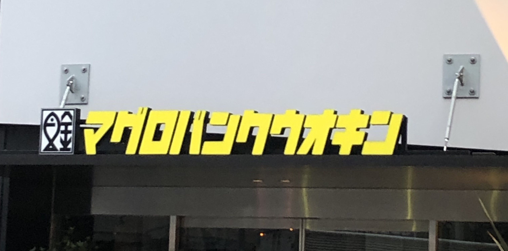
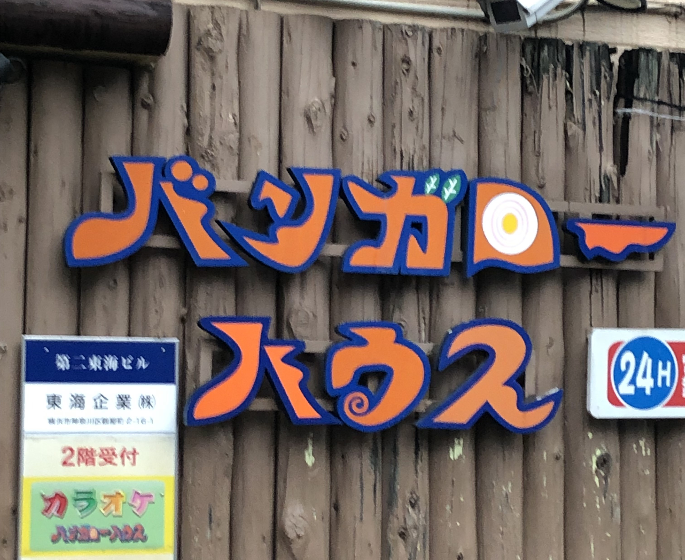
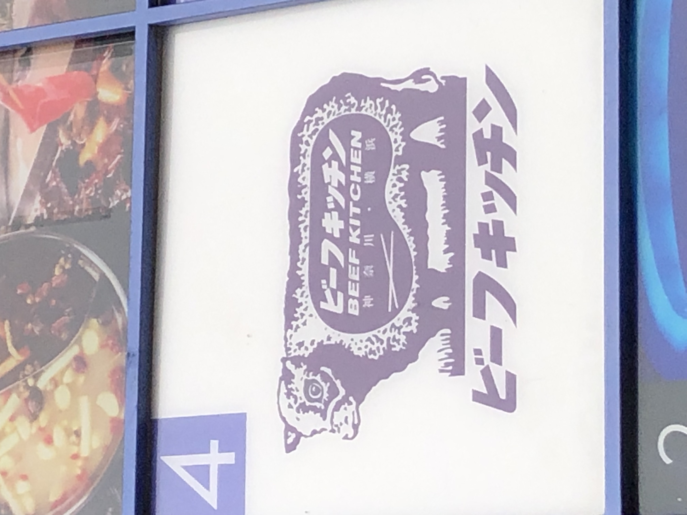

第2回課題
観察（看板・サイン）
-

・10/10朝6時ごろ横浜駅付近で自分で撮影
・海鮮料理のお店のもの
・看板の店名の横にあるマークに注目しました。魚の絵と金の文字を組み合わせて、お店の名前をわかりやすく伝えているマークだと思います。
- 
・10/10朝6時ごろ横浜駅付近で自分で撮影
・カラオケ店のもの
・何のお店の看板なのだろうと思って撮影しました。色やロゴのデザインが特徴的で目に入りやすいと思いました。
- 
・10/10朝6時ごろ横浜駅付近で自分で撮影
・黒毛和牛が食べられる焼き肉店のもの
・かわいくて目に止まったので撮影しました。牛の絵が使われているので牛が食べられるお店だということがすぐにわかってよいと思いました。
絵の色やフォントが少し昔っぽさを感じさせると思いました。